소방설비기사(전기분야) (2010-05-09 기출문제)
1과목: 소방원론
1. 보일오버(Boil over) 현상에 대한 설명으로 옳은 것은?
- 아래층에서 발생한 화재가 위층으로 급격히 옮겨 가는 현상
- 연소유의 표면이 급격히 증발하는 현상
- 탱크 저부의 물이 급격히 증발하여 기름이 탱크 밖으로 화재를 동반하여 방출하는 현상
- 기름이 뜨거운 물 표면 아래에서 끓는 현상
(정답률: 90%)

2. 청정소화약제 중 HCFC-22 가 82% 인 것은?
- HCFC BLEND A
- IG-541
- HFC-227ea
- IG-55
(정답률: 74%)
3. 감광계수 (m-1)에 대한 설명으로 옳은 것은?
- 0.5 는 거의 앞이 보이지 않을 정도이다.
- 10 은 화재 최성기 때의 농도이다.
- 0.5 는 가시거리 20~30m 정도이다.
- 10은 연기감지기가 작동하기 직전의 농도이다.
(정답률: 84%)
4. 다음 중 조연성 가스에 해당하는 것은?
- 천연가스
- 산소
- 수소
- 부탄
(정답률: 90%)
5. 마그네슘의 화재시 이산화탄소소화약제를 사용하면 안되는 이유는?
- 마그네슘과 이산화탄소가 반응하여 흡열반응을 일으키기 때문이다.
- 마그네슘과 이산화탄소가 반응하여 가연성의 탄소가 생성되기 때문이다.
- 마그네슘이 이산화탄소에 녹기 때문이다.
- 이산화탄소에 의한 질식이 우려가 있기 때문이다.
(정답률: 81%)
6. 제2류 위험물에 해당하지 않는 것은?
- 유황
- 황화린
- 적린
- 황린
(정답률: 86%)
7. 다음 중 불연재료에 해당하지 않는 것은?
- 기와
- 아크릴
- 유리
- 콘크리트
(정답률: 81%)
8. 소방시설의 구분에서 피난설비에 해당하지 않는 것은?
- 무선통신보조설비
- 완강기
- 구조대
- 공기안전매트
(정답률: 84%)
9. 소방설비에 사용되는 CO2에 대한 설명으로 틀린 것은?
- 용기 내에 기상으로 저장되어 있다.
- 상온, 상압에서는 기체 상태로 존재한다.
- 공기보다 무겁다.
- 무색, 무취이며 전기적으로 비전도성이다.
(정답률: 63%)
10. 인화점이 낮은 것부터 높은 순서로 옳게 나열된 것은?
- 아세톤 < 이황화탄소 < 메틸알코올
- 이황화탄소 < 에틸알코올 < 아세톤
- 에틸알코올 < 아세톤 < 이황화탄소
- 이황화탄소 < 아세톤 < 에틸알코올
(정답률: 73%)
11. 다음 중 인화성 물질이 아닌 것은?
- 기어유
- 질소
- 이황화탄소
- 에테르
(정답률: 79%)
12. 불꽃의 색상을 저온으로부터 고온 순서로 옳게 나열한 것은?
- 암적색, 휘백석, 황적색
- 휘백색, 암적색, 황적색
- 암적색, 황적색, 휘백색
- 휘백색, 황적색, 암적색
(정답률: 81%)
13. 강화액에 대한 설명으로 옳은 것은?
- 침투제가 첨가된 물을 말한다.
- 물에 첨가하는 계면 활성제의 총칭이다.
- 물이 고온에서 쉽게 증발하게 하기 위해 첨가한다.
- 알칼리 금속염을 사용한 것이다.
(정답률: 43%)
14. 이산화탄소 소화약제 고압식 저장용기의 충전비를 옳게 나타낸 것은?
- 1.5 이상, 1.9 이하
- 1.1 이상, 1.9 이하
- 1.1 이상, 1.4 이하
- 1.4 이상, 1.5 이하
(정답률: 71%)
15. 다음 중 분진 폭발의 위험성이 가장 낮은 것은?
- 소석회
- 알루미늄분
- 석탄분말
- 밀가루
(정답률: 81%)
16. 연료로 사용하는 가스에 관한 설명 중 틀린 것은?
- 도시가스, LPG 는 모두 공기보다 무겁다.
- 1Nm3 의 CH4를 완전 연소시키는데 필요한 공기량은 약 9.25Nm3 이다.
- 메탄의 공기 중 폭발범위는 약 5 ~ 15% 정도이다.
- 부탄의 공기 중 폭발범위는 약 1.9 ~8.5% 정도이다.
(정답률: 81%)
17. 알킬알루미늄 화재시 사용할 수 있는 소화제로 가장 적당한 것은?
- 물
- 팽창진주암
- 이산화탄소
- Halon 1303
(정답률: 80%)
18. 무창층이 개구부로서 갖추어야 할 조건으로 옳은 것은?
- 개구부 크기가 지름 30cm의 원이 내접할 수 있는 것
- 해당 층의 바닥면으로부터 개구부 밑부분까지의 높이가 1.5m인 것
- 내부 또는 외부에서 쉽게 파괴 또는 개방할 수 있을 것
- 창에 방범을 위하여 40cm 간격으로 창살을 설치한 것
(정답률: 82%)
19. 소화기구의 구분에서 간이소화용구에 해당되지 않는 것은?F
- 이산화탄소소화기
- 마른모래
- 팽창질석
- 팽창진주암
(정답률: 79%)
20. 다음 중 가연성 물질이 산소와 급격히 화합할 때 열과 빛을 내는 현상에 해당하는 것은?
- 복사
- 기화
- 응고
- 연소
(정답률: 80%)
2과목: 소방전기회로
21. 그림과 같은 계전기 접점회로의 논리식은?
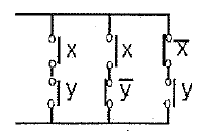
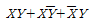
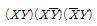
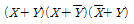
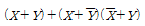
(정답률: 81%)
22. R = 10Ω, C = 33μF, L = 20mL인 R-L-C 직렬회로의 공진 주파수는?
- 19.6[Hz]
- 24.1[Hz]
- 196[Hz]
- 241[Hz]
(정답률: 58%)
23. 그림에서 a, b간의 합성저항은? (단, 그림에서의 단위는 [Ω]이다.)
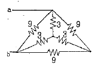
- 3[Ω]
- 4[Ω]
- 5[Ω]
- 6[Ω]
(정답률: 65%)
24. 그림과 같은 블록선도에서 C는?
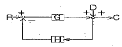
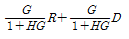
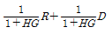
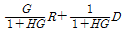
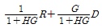
(정답률: 66%)
25. 물체의 위치, 방위, 자세 등의 기계적 변위를 제어량으로 해서 목표값의 임의의 변화에 추종하도록 구선되어 있는 제어계는?
- 자동조정
- 추치제어
- 서보제어
- 비율제어
(정답률: 76%)
26. 단상교류회로에 연결되어 있는 부하의 역률을 측정하고자 한다. 이 때 필요한 계축기의 구성으로 옳은 것은?
- 전압계, 전력계, 회전계
- 저항계, 전력계, 전류계
- 전압계, 전류계, 전력계
- 전류계, 전압계, 주파수계
(정답률: 87%)
27. 콘덴서 회로를 전로로부터 분리하는 경우 잔류 전하를 쉽게 방전하기 위해서 사용하는 것은?
- 인터록 장치
- 방전코일
- 직렬리액터
- 전격방지설비
(정답률: 76%)
28. 그림과 같은반파 정류회에서 콘덴서 C의 단자 전압은?
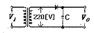
- 156[V]
- 220[V]
- 311[V]
- 691[V]
(정답률: 46%)
29. 계측기 접점의 불꽃 제거나 서지 전압에 대한 과입력보호용으로 사용되는 것은?
- 바리스터
- 사이리스터
- 서미스터
- 트랜지스터
(정답률: 79%)
30. SCR의 애노드 전류가 5A일 때 게이트 전류를 2배로 증가시키면 애노드 전류는?
- 2.5[A]
- 5[A]
- 10[A]
- 20[A]
(정답률: 74%)
31. A, B단자간 콘덴서의 합성 정전용량은? (단, C1=3μF, C2=5μF, C3=8μF 이다.)
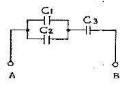
- 1[μF]
- 2[μF]
- 3[μF]
- 4[μF]
(정답률: 59%)
32. 220V, 32W 전등 2개를 매일 5시간씩 점등하고, 600W전열기 1개를 매일 1시간씩 사용할 경우 1개월1(30일)간 소비되는 전력량은[kWh] 은?
- 27.6[kWh]
- 55.2[kWh]
- 110.4[kWh]
- 220.8[kWh]
(정답률: 63%)
33. 기준입력과 주궤환 신호와의 편차인 신호로써 제어동작을 일으키는 신호는?
- 제어변수
- 오차
- 다변수
- 외란
(정답률: 59%)
34. I=100sin⍵t[A]의 평균값은?
- 63.7[A]
- 70.7[A]
- 141.4[A]
- 173.2[A]
(정답률: 59%)
35. 길이가 100m 이고, 지름이 1mm인 구리선의 상온 25℃에서의 저항은? (단, 상온 25℃에서 동선의 고유저항 p=1.72μΩㆍcm이다.)
- 4.38[Ω]
- 2.19[Ω]
- 1.72[Ω]
- 1.09[Ω]
(정답률: 47%)
36. 그림과 같은 논리회로의 명칭은?
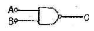
- AND
- NAND
- OR
- NOR
(정답률: 63%)
37. 2선식 전원공급배선에서 배전선의 대지간 절연저항이 각각 3MΩ, 2MΩ이었다. 이 배전선의 합성절연저항은?
- 1[MΩ]
- 1.2[MΩ]
- 5[MΩ]
- 6[MΩ]
(정답률: 60%)
38. 어떤 전압계의 측정범위를 20배로 하려면 배율기의 저항 Rm과 전압계의 저항 rV의 관계는?
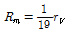
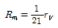
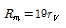
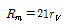
(정답률: 52%)
39. 피드백 제어계의 특징으로 잘못된 것은?
- 정확성이 증가한다.
- 감도폭이 감소한다.
- 비선형성과 왜형에 대한 효과가 감소한다.
- 계의 특성변화에 대한 입력 대 출력비의 강도가 감소한다.
(정답률: 48%)
40.
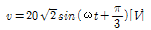
를 복소수로 표시하면?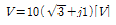
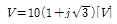
- V=10(1+j0.5)[V]
- V=10(1+j2)[V]
(정답률: 54%)
3과목: 소방관계법규
41. 연면적이 33m2가 되지 않아도 수동식소화기 또는 간이 소화용구를 설치하여야 하는 특정소방대상물은?
- 지정문화재
- 판매시설
- 유흥주점영업소
- 변전실
(정답률: 72%)
42. 소방신호의 종류에 속하지 않는 것은?
- 경계신호
- 해제신호
- 경보신호
- 훈련신호
(정답률: 56%)
43. 무창층을 정의할 때 사용되는 개구부의 요건과 거리가 먼 것은?
- 개구부의 크기가 지름 50cm 이상의 원이 내접할 수 있을 것
- 해당 층의 바닥면으로부터 개구부 밑부분까지의 높이가 1.2m 이내일 것
- 개구부는 도로 또는 차량이 진입할 수 있는 빈터를 향할 것
- 내부 또는 외부에서 쉽게 파괴 또는 개장할 수 없을 것
(정답률: 76%)
44. 위험물을 취급함에 있어서 정전기가 발생할 우려가 있는 설비는 공기 중의 상대습도를 몇 [%]이상으로 하는 방법으로 정전기를 유효하게 제거할 수 있는 설비를 설치하여야 하는가?
- 30[%]
- 55[%]
- 70[%]
- 90[%]
(정답률: 81%)
45. 소방공사감리를 함에 있어 규정을 위반하여 감리를 하거나 거짓으로 감리한 자에 대한 벌칙은?
- 1년 이하의 징역 또는 1천만원 이하의 벌금
- 1년 이하의 징역 또는 2천만원 이하의 벌금
- 2년 이하의 징역 또는 1천만원 이하의 벌금
- 3년 이하의 징역 또는 3천만원 이하의 벌금
(정답률: 60%)
46. 의용소방대의 운영과 처우 등에 대한 경비를 부담하여야 하는 자는?(관련 규정 개정전 문제로 여기서는 기존 정답인 3번을 누르면 정답 처리됩니다. 자세한 내용은 해설을 참고하세요.)
- 소방방재청장
- 의용소방대장
- 임면권자
- 구조대장
(정답률: 70%)
47. 소방대상물의 방염성능 기준으로 옳지 않은 것은?
- 버너의 불꽃을 제거한 때부터 불꽃을 올리지 아니하고 연소하는 상태가 그칠 때까지 시간은 30초 이내
- 탄화한 면적은 50제곱센티미터 이내, 탄화 길이는 20센티미터 이내
- 불꽃에 의하여 완전히 녹을 때까지 불꽃의 접촉횟수는 5회 이상
- 버너의 불꽃을 제거한 때부터 불꽃을 올리며 연소하는 상태가 그칠 때까지 시간은 20초 이내
(정답률: 58%)
48. 지정수량은 몇 배 이상의 위험물을 취급하는 제조소는 관계인이 예방규정을 정하여야 하는가?
- 5배
- 10배
- 100배
- 200배
(정답률: 70%)
49. 지정수량 미만인 위험물의 저장 또는 취급에 관한 기술상의 기준은 무엇으로 정하는가?
- 위험물제조소 등의 내규로 정한다.
- 행정자치부령으로 정한다.
- 소방방재청의 내규로 정한다.
- 시ㆍ도의 조례로 정한다.
(정답률: 72%)
50. 면적이나 구조에 관계없이 물분무 등 소화설비를 반드시 설치하여야 하는 특정소방대상물은?
- 통신기기실
- 항공기격납고
- 전산실
- 주차용건축물
(정답률: 77%)
51. 방염업의 등록기준에 관한 사항으로 시험실의 전용면적은 몇 제곱미터 이상이어야 하는가?(관련 규정 개정전 문제인듯 합니다. 기존 정답은 1번이며 여기서는 1번을 누르면 정답 처리 됩니다. 자세한 내용은 해설을 참고하세요.)
- 20제곱미터
- 30제곱미터
- 100제곱미터
- 200제곱미터
(정답률: 67%)
52. 건축허가등의 동의 대상물의 범위로 옳지 않은 것은?
- 연면적이 400제곱미터 이상인 건축물
- 항공이 격납고
- 방송용 송ㆍ수신탑
- 지하층 또는 무창층이 있는 건축물로서 바닥면적이 50제곱미터 이상인 층이 있는 것
(정답률: 64%)
53. 소방용수시설을 주거지역에 설치하고자 하는 경우 소방대상물과 수평거리는 몇 [m]이하가 되도록 하여야 하는가?
- 50[m]
- 100[m]
- 150[m]
- 200[m]
(정답률: 65%)
54. 도시의 건물 밀집지역 등 화재가 발생할 우려가 높거나 화재가 발생하는 경우 그로 인하여 피해가 클 것으로 예상되는 일정한 구역으로서 대통령령이 정하는 지역에 대하여 시ㆍ도지사가 지정하는 것은?
- 화재경계지구
- 화재경계구역
- 방화경계구역
- 재난재해지역
(정답률: 60%)
55. 형식승인대상 소방용기계ㆍ기구에 속하지 않는 것은?
- 방염제
- 구조대
- 완강기
- 휴대용비상조명등
(정답률: 74%)
56. 소방시설 중 화재를 진압하고나 인명구조 활동을 위하여 사용하는 설비로 나열된 것은?
- 상수도소화용수설비, 연결송수관설비
- 연결살수설비, 제연설비
- 연소방지설비, 피난설비
- 무선통신보조설비. 통합감시시설
(정답률: 66%)
57. 하자보수보증기간이 2년이 아닌 소방시설은?
- 유도등
- 피난기구
- 무선통신보조설비
- 자동식소화기
(정답률: 67%)
58. 제4류 위험물을 저장하는 위험물제조소의 주의사항을 표시한 게시판의 내용으로 적합한 것은?
- 화기엄금
- 물기엄금
- 화기주의
- 물기주의
(정답률: 79%)
59. 방염처리업자의 지위를 승계한 자는 그 지위를 승계한 날부터 며칠 이내에 관련서류를 시ㆍ도지사에게 제출 하여야 하는가?
- 10일
- 15일
- 30일
- 60일
(정답률: 71%)
60. 소방기본법령상 화재가 발생한 때 화재의 원인 및 피해등에 대한 조사를 하여야 하는 자는?(관련 규정 개정전 문제로 여기서는 기존 정답인 2번을 누르면 정답 처리 됩니다. 자세한 내용은 해설을 참고하세요.)
- 시ㆍ도지사 또는 소방본부장
- 소방방재청장ㆍ소방본부장 또는 소방서장
- 행정안전부장관ㆍ소방본부장 또는 소방파출소장
- 시ㆍ도지사, 소방서장 또는 소방파출소장
(정답률: 79%)
4과목: 소방전기시설의 구조 및 원리
61. 자동화재탐지설비의 감지기 배선방식은 송배전(보내기배선)방식으로 설치하는 목적으로 가장 알맞은 것은?
- 도통시험을 하기 위함
- 작동시험을 하기 위함
- 비상전원 상태를 확인하기 위함
- 상용전원 상태를 확인하기 위함
(정답률: 75%)
62. 누전경보기의 변류기는 경계전로에 정격전류를 흘리는 경우 그 경계전로의 전압강하는 몇 [V] 이하이어야 하는가?
- 0.1[V]
- 0.5[V]
- 1[V]
- 5[V]
(정답률: 54%)
63. 누전경보기의 수신부는 그 정격전압에서 몇 회의 누전작동 반복시험을 실시하는 경우 구조 및 기능에 이상이 생기지 않아야 하는가?
- 1만회
- 2만회
- 3만회
- 5만회
(정답률: 74%)
64. 유도표지의 설치기준으로서 잘못된 것은?
- 부착판 등을 사용하여 쉽게 떨어지지 아니하도록 설치할 것
- 통로유도표지는 출입구 상단에 설치할 것
- 주위에는 이와 유사한 등화ㆍ광고물ㆍ게시물 등을 설치하지 아니할 것
- 축광방식의 유도표지는 외광 또는 조명장치에 의하여 상시 조명이 제공되거나 비상조명등에 의한 조명이 제공되도록 설치할 것
(정답률: 64%)
65. 수신기의 외부배선 연결용 단자에 있어서 7개회로마다 1개 이상 설치하여야 하는 단자는?
- 공통신호선용
- 경계구역구분용
- 지구경종신호용
- 동시작동시험용
(정답률: 63%)
66. 일반적으로 부착높이가 15m 이상 20m 미만에 부착하는 감지기에 속하지 않는 것은?
- 이온화식 1종 감지기
- 연기복합형감지기
- 불꽃감지기
- 차동식분포형감지기
(정답률: 66%)
67. 다음이 설명하고 있는 기능의 감지기는?
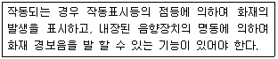
- 보상식감지기
- 불꽃감지기
- 광전식분리형감지기
- 단독경보형감지기
(정답률: 82%)
68. 비상발송설비에서 기동장치에 따른 화재신고를 수신한 후 필요한 음량으로 화재발생상황 및 피난에 유효한 방송이 자동으로 개시될 때까지 소요시간은 얼마로 하여야 하는가?
- 5초 이하
- 10초 이하
- 20초 이하
- 30초 이하
(정답률: 78%)
69. 자동식사이렌설비는 그 설비에 대한 감시상태를 몇 분간 지속한 후 유효하게 10분 이상 경보할 수 있는 축전지설비를 설치하여야 하는가?
- 10분
- 30분
- 60분
- 120분
(정답률: 83%)
70. 차동식분포형 감지기는 그 기판면을 부착한 정 위치로부터 몇 [°]를 경사시킨 경우 그 기능에 이상이 생기지 아니하여야 하는가?
- 5[°]
- 15[°]
- 30[°]
- 45[°]
(정답률: 58%)
71. 비상조명등은 비상전원으로 전환되는 경우 비상점등회로로 정격전류의 몇 배 이상의 전류가 흐르는 경우 예비전원으로부터의 비상전원의 공급을 차단하여야 하는가?
- 1.1배
- 1.2배
- 1.5배
- 2.0배
(정답률: 63%)
72. 보행거리가 50m인 지하상가에 휴대용 비상조명등을 설치하고자 한다. 최소 설치 갯수는?
- 1개
- 2개
- 3개
- 6개
(정답률: 54%)
73. 비사콘센트설비에 있어서 하나의 전용회로에 설치하는 비상콘센트는 몇 개 이하로 하여야 하는가?
- 2개
- 10개
- 20개
- 50개
(정답률: 85%)
74. 유도등에 있어서 표시면외 조명에 사용되는 면은?
- 조사면
- 피난면
- 조도면
- 광속면
(정답률: 52%)
75. 무선통신보조설비에 사용되는 각종 장치 등에 대한 설명으로 틀린 것은?
- 분파기 - 임피던스 매칭과 신호 균등분배를 위해 사용하는 장치
- 혼합기 - 두 개 이상의 입력신호를 원하는 비율로 조합한 출력이 발생하도록 하는 장치
- 증폭기 - 신호 전송시 신호가 약해져 수신이 불가능 해지는 것을 방지하기 위해서 증폭하는 장치
- 누설동축케이블 - 동축케이블의 외부도체에 가느다란 홈을 만들어서 전파가 외부로 새어나갈 수 있도록 한 케이블
(정답률: 71%)
76. 무선통신보도설비의 누설동축케이블 및 공중선은 고압의 전로로부터 몇 [m]이상 떨어진 위치에 설치하여야 하는가?
- 1.5m
- 4.0m
- 100m
- 300m
(정답률: 65%)
77. 전원3상교류 380V인 하나의 전용회로에 비상콘센트가 7개 설치되어 있다면 전선의 용량은 몇 [kVA] 이상이어야 하는가?(오류 신고가 접수된 문제입니다. 반드시 정답과 해설을 확인하시기 바랍니다.)
- 4.5kVA
- 9kVA
- 21kVA
- 30kVA
(정답률: 27%)
78. 연기감지기를 천장 또는 반자가 낮은 실내 또는 좁은 실내에 설치하는 경우 그 설치 개소로 알맞은 것은?
- 천장의 중앙부분
- 모서리부분
- 출입구의 가까운 부분
- 벽 또는 보로부터 1.5m 이상 떨어진 부분
(정답률: 62%)
79. 다음 중 경계구역을 별도로 설정하여야 하는 것으로 옳은 것은?
- 파이프덕트
- 복도
- 통로
- 거실
(정답률: 64%)
80. 자동화재속보설비의 속보기는 자동화재탐지설비로부터 작동신호를 수신하거나 수동으로 동작시키는 경우 20초이내에 소방관서에 자동적으로 신호를 발하여 통보하되, 몇 회 이상 속보할 수 있어야 하는가?
- 2회
- 3회
- 4회
- 5회
(정답률: 79%)